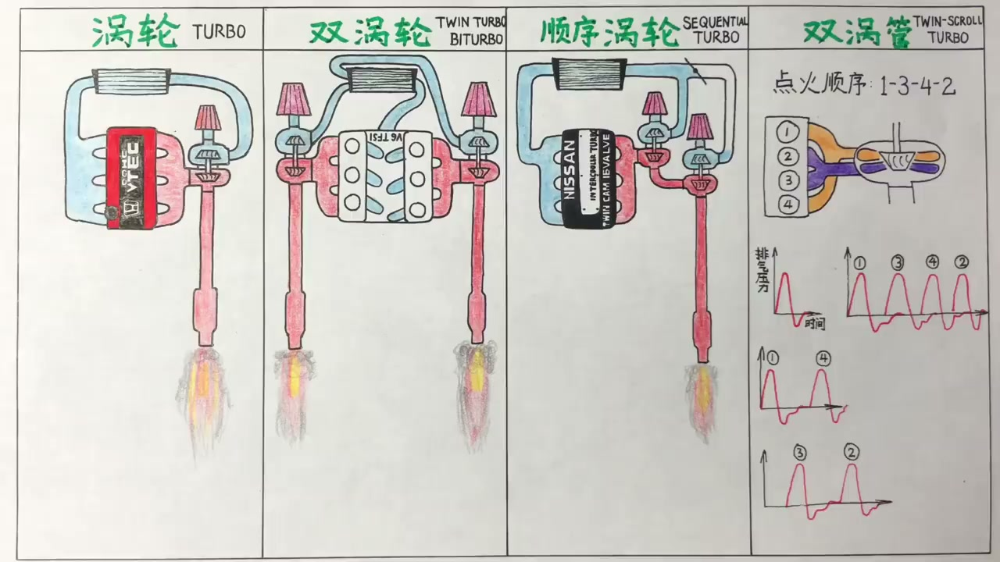
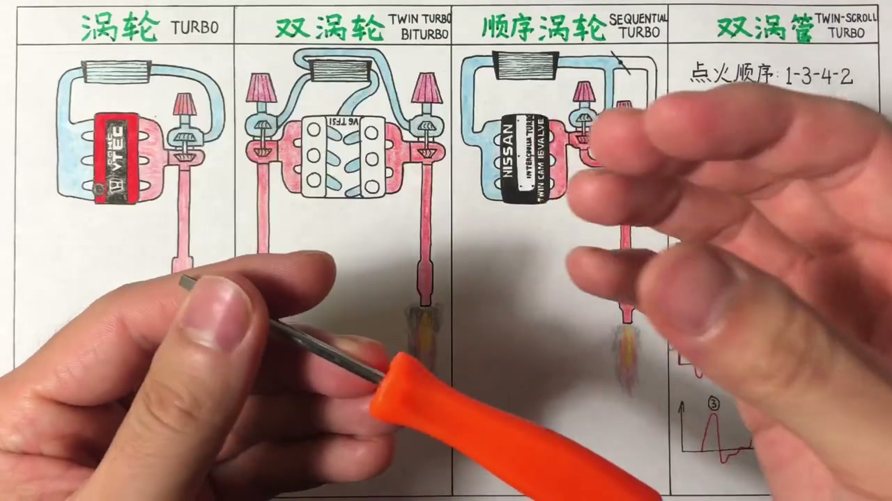
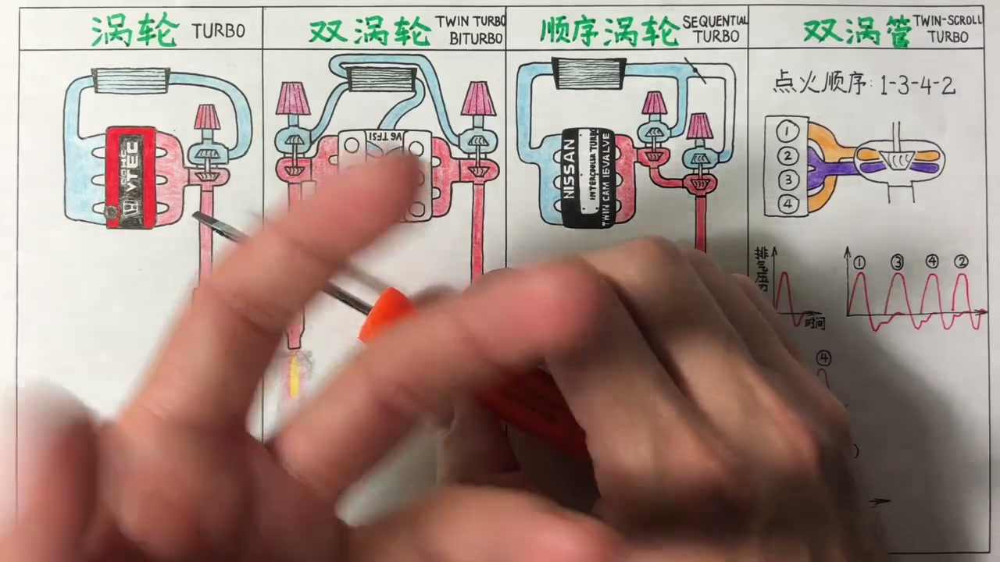
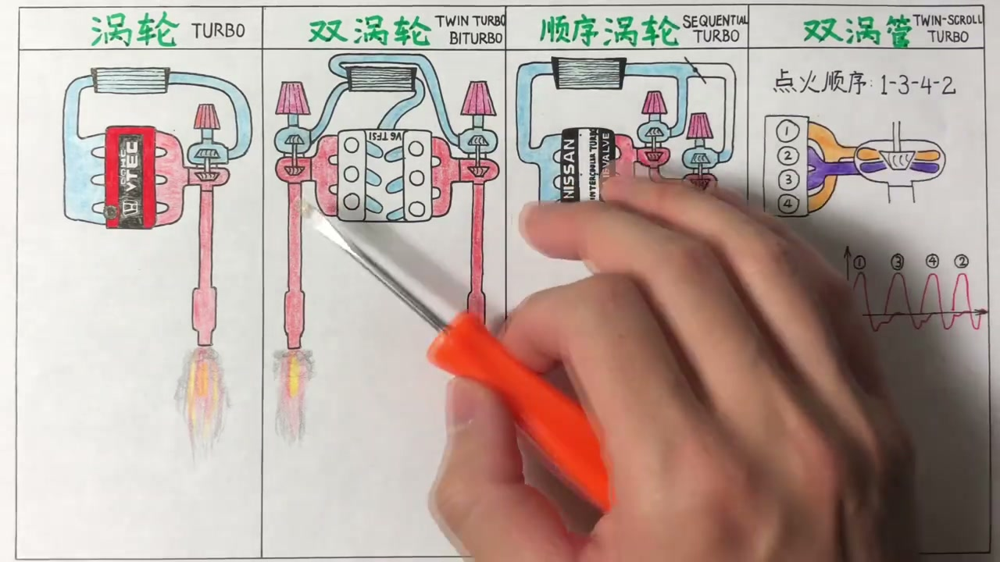
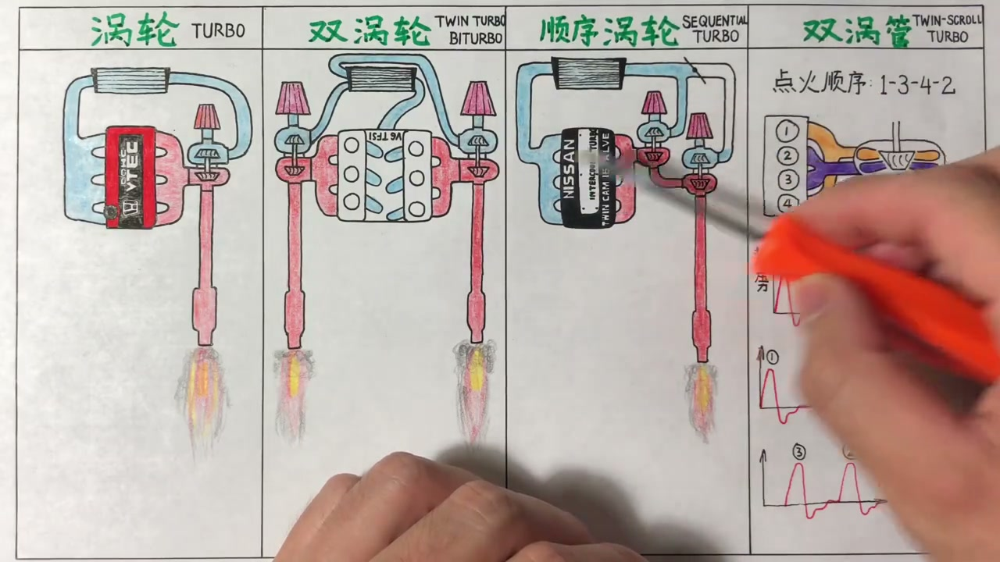
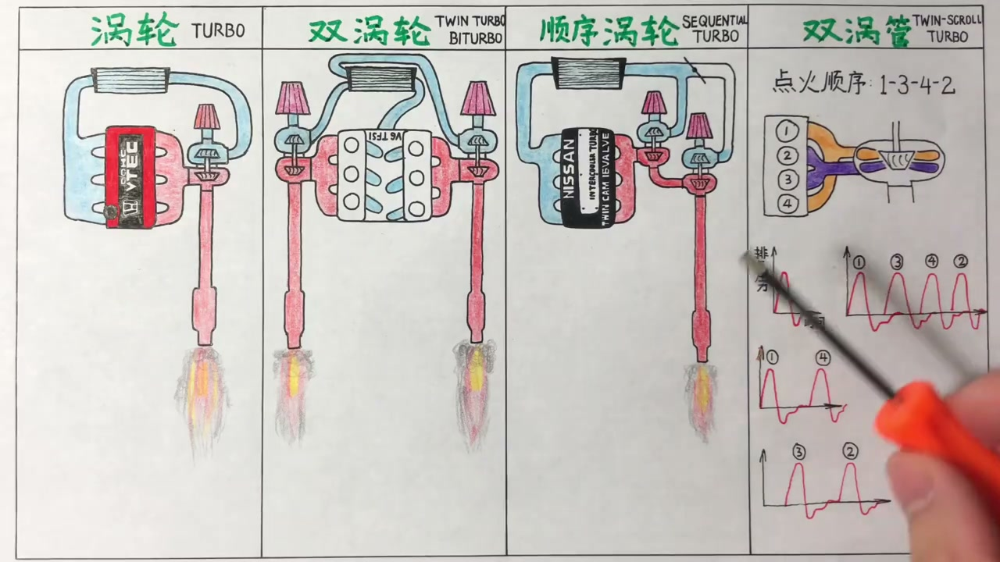
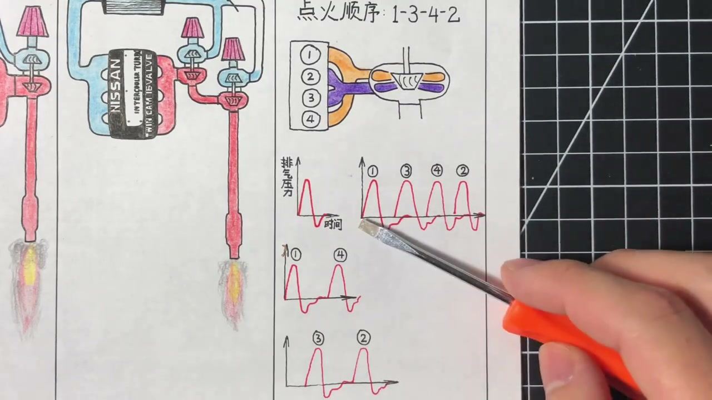

01
中文
想要更大的动力就需要燃烧更多汽油，就要有与之对应的更多空气。
EN
More power means burning more fuel, which needs more air.
表达提示fuel（汽油）

Scene English · 汽车 · 涡轮
Turbocharging: The Principle and Four Kinds of Turbos
🎧 语音讲解
The Basic Turbo Principle
情境发动机动力靠汽油和空气一起燃爆，想获得更大动力就要燃烧更多汽油，就要更多空气。排量固定则吸入的空气有限，于是有了涡轮增压：废气吹动一个小电风扇，带动轴另一头的进气端风扇像鼓风机一样把更多空气压进发动机。
想要更大的动力就需要燃烧更多汽油，就要有与之对应的更多空气。
More power means burning more fuel, which needs more air.
表达提示fuel（汽油）
每台发动机排量固定，能吸入的空气是有限的。
Displacement is fixed, so the air it can draw is limited.
表达提示displacement（排量）
涡轮就是两个小电风扇用一根小轴连在一起，废气吹动一头，另一头把更多空气压进发动机。
A turbo is two little fans on one shaft: exhaust spins one side, the other packs in more air.
表达提示spins（吹动）
空气变多了就能喷更多汽油，动力自然就大了。
More air allows more fuel—and more power.
表达提示more power（更大动力）
fuel（汽油
displacement（排量

The Intercooler's Job
情境空气被压缩后会变热膨胀、变稀薄，吸入发动机时空气量反而减少，所以需要中冷器冷却进气。多数中冷放车头迎风，或在引擎盖开洞（如斯巴鲁STI），也有用水冷冷却的。
空气被压缩以后温度升高，温度一高空气就会膨胀变稀薄。
Compressed air heats up, expands, and thins out.
表达提示thins out（变稀薄）
所以需要一个中冷器来冷却进气。
That's why an intercooler cools the intake charge.
表达提示intercooler（中冷器）
大多数中冷放在车头迎风位置，也有在引擎盖开洞的，比如斯巴鲁STI。
Most intercoolers sit at the nose; some sit under a hood scoop, like the Subaru STI.
表达提示hood scoop（引擎盖开洞）
thins out（变稀薄
intercooler（中冷器

Three Downsides of Turbos
情境涡轮缺点一：贵，涡轮本身几千到几万，配套的中冷、卸压阀、油路管道都是成本；缺点二：高温，靠排气带动，最高可达900多摄氏度，需要单独油路润滑降温，对机油要求更高；缺点三：涡轮迟滞，涡轮被排气带起来需要时间，越大越慢。
第一个缺点就是贵：涡轮本身几千到几万，配套设备也都是钱。
First, cost: turbos run from thousands to tens of thousands, plus all the supporting parts.
表达提示supporting parts（配套部件）
第二个缺点就是高温，最高能到将近900多摄氏度。
Second, heat—up to nearly 900°C.
表达提示nearly 900°C（近900度）
第三个也是最大的缺点，就是涡轮迟滞：一脚油门踩到底，要等一两秒动力才轰的一下跟上。
Third, and biggest, is turbo lag: you floor it and wait a second or two before the power hits.
表达提示turbo lag（涡轮迟滞）
supporting parts（配套部件
nearly 900°C（近900度

Twin Turbo: Two Smaller Ones
情境涡轮做小没有迟滞但动力跟不上，做大动力好但反应慢。工程师用两个尺寸相同的小一号涡轮代替一个大涡轮。V型发动机左右各有一个排气歧管，正好一边装一个，进气在中冷器处汇合。市面上标Twin Turbo或Bi-turbo的其实都是这种双涡轮。
涡轮做小了动力跟不上，做大了有迟滞，怎么两者兼顾？用两个小一号的涡轮。
Small turbos lack top-end, big ones lag—so engineers use two smaller ones.
表达提示top-end（高转动力）
V型发动机正好左右各有一个排气歧管，一边装一个涡轮。
A V engine has two exhaust manifolds, so each bank gets its own turbo.
表达提示exhaust manifold（排气歧管）
Twin Turbo和Bi-turbo其实都是不同的叫法，实质都是双涡轮。
Twin Turbo and Bi-turbo are just different names for the same thing.
表达提示Twin Turbo（双涡轮）
top-end（高转动力
exhaust manifold（排气歧管

Sequential Turbo: Small Then Large
情境顺序涡轮的两个涡轮有前后顺序：一个小涡轮加一个大一号的涡轮，之间有一个可开关的阀门。低转速排气压力不够时阀门关闭，大涡轮不参与，小涡轮快速完成增压；转速上来后打开阀门，两个涡轮同时增压。兼顾了迟滞和马力问题，90年代很多JDM跑车如马自达RX-7转子引擎、丰田Supra用过，但因管路复杂和现代技术改进，今天新车上基本看不到了。
顺序涡轮的两个涡轮有前后顺序，一个大一号、一个小一号，中间有个阀门控制开关。
In a sequential setup the two turbos differ in size, gated by a controllable valve.
表达提示sequential（顺序的）
低转速时阀门关上，排气只驱动小涡轮，发挥尺寸小的优势快速完成增压。
At low rpm the valve closes; exhaust spins only the small turbo for quick boost.
表达提示quick boost（快速增压）
转速上来排气压力够了再打开阀门，两个涡轮同时给进气增压。
Once pressure builds, the valve opens and both turbos boost together.
表达提示boost（增压）
90年代很多JDM跑车用它，比如马自达RX-7和丰田Supra，但今天新车上基本看不到了。
90s JDM cars like the RX-7 and Supra used it, but it's rare on new cars now.
表达提示JDM（日本国内市场的车）
sequential（顺序的
quick boost（快速增压

Twin-Scroll: One Turbo, Two Paths
情境双涡管涡轮名字里带双但其实是单涡轮、双涡管。以直列四缸为例：1、4缸共用一个排气歧管进黄色通道，2、3缸共用进紫色通道。四缸机点火顺序1342，后一缸排气正压总会和前一缸的负压重叠，抵消部分压力。把互相影响的缸分开就能避免排气脉冲互相干扰，让排气压力更高效施加到涡轮上。宝马机舱里看到Twin Power Turbo字样其实是双涡管。
双涡管涡轮虽然名字里有双字，但它是单涡轮、双涡管。
A twin-scroll turbo is one turbo with two scrolls, not two turbos.
表达提示twin-scroll（双涡管）
四缸机点火顺序1342，后一缸排气的正压总和前一缸的负压有重叠，抵消掉一部分压力。
With firing order 1-3-4-2, each cylinder's positive pulse overlaps the prior one's vacuum.
表达提示firing order（点火顺序）
把互相影响的缸分开，1、4缸一管，2、3缸一管，排气压力就能更高效地施加到涡轮上。
Separating the interfering cylinders—1/4 down one scroll, 2/3 down the other—makes the pulses work, not fight.
表达提示scroll（涡管）
twin-scroll（双涡管
firing order（点火顺序

Turbo vs NA vs Supercharger
情境涡轮大势所趋，动力和经济性优势大于劣势；自吸在可靠性和后期保养上更胜一筹，纯家用需求自吸仍适合。对比机械增压：涡轮赢在极限动力，机械增压没有迟滞、动力随叫随到、基本不产生高温、寿命可靠性更好，但用发动机本身能量增压，理论效率不如涡轮。
涡轮是大势所趋，优势大于劣势，无论从动力性还是经济性角度。
Turbo is the trend—its pros outweigh its cons.
表达提示the trend（大势所趋）
自吸在可靠性和后期保养上更胜一筹，纯家用需求自吸还是更适合你。
Naturally aspirated engines win on reliability and upkeep—great for pure daily use.
表达提示naturally aspirated（自然吸气）
机械增压没有丝毫迟滞，动力随叫随到，也基本不产生高温。
A supercharger has zero lag, instant response, and runs cool.
表达提示supercharger（机械增压）
但机械增压用发动机本身能量增压，理论效率还是涡轮更高。
It's belt-driven off the engine, so turbos remain theoretically more efficient.
表达提示belt-driven（由皮带驱动）
the trend（大势所趋
naturally aspirated（自然吸气
说涡轮原理
说中冷器
说三大缺点
说双涡轮
说顺序涡轮
说双涡管
涡轮越大迟滞越大。
压缩空气会变热变稀。
配套部件都是成本。
双涡管不是双涡轮。
现代技术已很好控制迟滞。